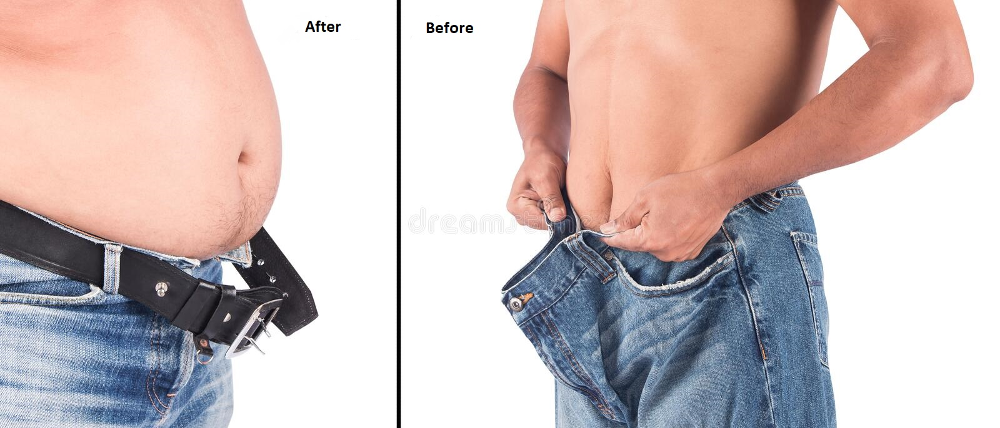

- 🏡Home🏡
- 👨🎓Schools👨🎓
- 💼Career💼
- 📈CV📉
- 🛩️Flying✈️
- ☎️Contact Me☎️
- 📜Various📜
A Potato Tribute⌛️
The Weight Gainers Club... Members Page.

This page is dedicated, and is a tribute to the classic"Potato" that is not only delicious & easy to cook in many different ways, but is a superb means of gaining weight, and as we all know, the starch gets converted into sugars. So, if you're overweight & looking to add a few more kilo's, then look no further, as your solution is right here. For best results, join a club, or Google the word "Spud". There are many on-line sites that will supply you with all the necessary info regarding weight gain & weight gain clubs.
Join the weekly slogan competition, & you could possibly win a trip for 2 fatties to America to partake in the 3 day "All You Can Eat bonanza" at McDonalds. So get the slogans going "No spud in the mud", or "Very few spuds are duds" or "My wife's a potato"😂😂😂 (Think this one is the best), or Three spuds in a tree😂(Get it?? three, rhymes with tree), or "Just jump in the sack with a potato"😂😂, & finally, "Put your tate toes in the pot"😂😂😂 (No this one is the best). The closing date for slogan entries will be May 2026, so hurry as there's not much time left.
If you need advice on shoving as many spuds as you can down your neck & trying not to lose the tubbyness that you have worked so hard for, then look for us on-line @fatgainers.com
This page, was built from a love of Potatoes 🥔🥔🥔🍺. I hope you enjoy reading!.
Potato Images. Also, try these tasty potato recipes. Potato Recipes.
The Old Spud:
If you have any suggestions on adding fat let us know.
Some comments & feedback from members who have been on the "Weight Gainers Diet".
- Phyliss from Birmingham said:- I gained 153.6Kg in just 12 weeks. I'll never go back to being slim. I'm over the moon. Thank you Weight Gainers
- Steven from Brighton said:- My hubby can't leave me alone. After years of having a shapely figure (36-24-36), I can finally relax now, now that I've reached my goal of 390Kg, plus I'm at an exciting (48-40-40)
- Brenda Paisley from Belfast said:- It's been only 2 months since I joined Weight Gainers, but I've put on so much weight that I have to do a weekly shop for new clothes, as my old ones don't fit anymore. Absolutely thrilled, plus I get to go shopping😂😂. Thank You
- Suzanna Fayette originally from Paris said:- At school I was the bully's target for being so slim. It was horrible, being told I looked "skinny" & taking a daily beating because of it. A friend of mine suggested I try the "Potato Plan", which I did & put on a staggering 319Kg in only 18 weeks. I just can't believe it!!. I have to pinch myself a couple of times a day just to make sure. Oh by the way, the bully has lost most of his teeth & is now blind & in a wheelchair. This was acheived with the help of my fat overweight mates from the club. A massive thank you to Weight Gainers. Oooh La La!
- Wendy Phillips from Shepherds Bush said:- My fella used to tease me constantly about having an old fashioned looking body. I just couldn't take it anymore knowing that deep down he's longing for me to have that "Roly Poly" look. So I've started a strict Weight Gainers potato plan 48 week course, & my aim is to be on the TV show "600lb's or Greater". I'll keep you updated.
- Liz Hertz from Stratclyde a 76 year old said:- I don't work & never have. I'm single with no kids & I'm on income support & I only get £1890 per week, plus £1196 per week unemployment benefit. & a small state pension of just £781 per week, so really have to watch the pennies, as it's difficult to save. I've been so depressed lately about my weight & just can't seem to get anywhere with the weight gaining. But, I've made up my mind, & have decided to hit the potatoes in a big way with the Weight Gainers plan & hopefully get up to the heavy numbers. Who knows, I might even find myself a fella.
- Mohammed Ali Achmed Ahmed Abdullah Ismail an illegal imigrant from Somalia said:- I came here a month ago from France & crossed the channel in a small dingy type boat & headed for the UK. Halfway across, the boat was intercepted by the RNLI & I was warmly greeted & transfered to their boat. Food & drinks were supplied, including blankets, & a nice warm place to stay until I arrived. On my arrival at Dover, I was warmly welcomed by the border patrol & the police, who said "You're here now & you're safe & everything will be OK", and I was given a 14 inch Dominoes Pizza. After the immigration finished with the questions, I was asked if I would like to claim political asylum, to which I said most definitely I would. I can't speak 1 word of english & this is being written with the help of a translator, who is also muslim, & gets £43 per hour from the government, for translating. He's also an illegal imigrant. After spending a couple of days at the holding & processing area, I was informed that I will be transfered to a 5 star hotel in inner London, for me, my wife & my 6 kids who's age ranges from 23 to 38. I was also informed that all our meals & drinks will be provided 3 times a day & that a weekly cash allowance will be provided for out of pocket expenses, like cigarettes, alcohol, drugs etc. I now have a steady job in a halal restaurant in central London, with my wife & children working there illegally as well. I can't reveal where I am staying, because of retribution from the "National Front Of Britain", but I have been assured by Islington council that our 5 bedroom detached council house will be ready for us to move into early next week, & have been advised to apply for unemployment benefit & housing allowance. We have also been informed, that the police will supply a "round-the-clock" 24 hour protection for us against these white anti social racist yobs. Shukran (شكراً) Weight Gainers. P.S. There is talk of an MP3 9 seater car, being donated to us by a sympathetic group from Bradford. A collection has started by the same group & so far a total of £37,348 has been raised for us, who are a poor unfortunate family. Please donate on-line at illegalimmigrantsUK.com
- Ms India (Trans) Summers (previously known as Tommy "Batterhead" Porter) transvestite/homosexual/Lesbian & leader of the LGBQT party said:- I always knew even at 9 months old, that I was never meant to be in the body I was given. I was constantly looking for an escape from this hell. Then I saw an advert in the "Gay Times" magazine, that Weight Gainers were holding a competition to find a poofter who was willing to give up "The Old Straight Life" & start out afresh and given the chance to have the big "Op". Well I jumped at the opportunity & filled in the application form, had it verified & witnessed by a sergent Gladys Whillobe at Ilford central Police station. Gladys has been with the police since he left school. After serving almost 28 years in the force, he is now duty sergent & looks after the London Gay Pride marches. Me & all my poofter mates love that time of year he said, with tears welling up in his eyes!!. Well I had to wait a few more weeks & would you believe it....I won the competition, out of 22,000 applications. My whole life has changed (what with the "Op") & to cap it all Weight Gainers have given me a months free stay at one of their unisex spa/potato bar, with a guarantee to put on over 200Kg. Thanks to all Weigh Gainers Poofters support.
- Jim Moorehead 18, an unemployed plasterer said:- I was working on the new tower block just off the Portobello road, near to the little Wormwood Scrubs prison in Ladbrook Grove. Anyway, the tea break bell went & we all headed to the temporary porta cabin cafe, where you could get a cuppa & a roll. Luckily, I was on the Weight Gainers potato plan, so didn't have to buy any food, just a tea. So I started to tuck into my 35Lbs of mashed spuds for my breakfast (as per the plan), when I was approached by a security guard stating that "No outside food be brought into the cafe"!!. At this point I just ignored him & carried on slurping down a runny mixture of mash & tea. He was now starting to get aggitated cause I was ignoring him until finally, he cracked, & administered a right hook to my left ear drum causing me to let out an horrendous scream, & in an instant, I retaliated with a swift boot to his groin, where he buckled & doubled up in an agonising wail. Well, senior management were called in to get to the bottom of this ordeal, & seems like luck wasn't on my side, as I was dismissed immediately from the work site. Escorted by some burly security guys to the gate, & as a farewell gesture, they gave me a good kicking for the assault I applied to their work mate earlier on. That was over 2 years ago, & the current unemployment situation is still bad, as I've not had a job since. But, the good news is that I have gained a healthy 243Kg & I've never felt better. Sod the work cause I'm on unemployment benefit, & most of the money goes towards different types of potatoes. Thank You Weight Gainers for the potato plan & thank you senior management of the tower block for giving me the sack.
- Mrs Sylvia Pilkington from Bognor Regis said:- I have a 7 year old son (Malcolm) who has an IQ of 131. He's 5'-7" tall, clean shaven, dresses smartly & spends a great deal of time studying Law at the University Of Cambridge. He's a very sociable chappy, & gets along with most people. However, lately he has lost interest in his studies and his social life is suffering.
Sadly, he split up with his long time girlfriend last week (Harriet) who is 23 years old . He doesn't drink alcohol or smoke marijuana anymore. This is a real concern to both me & my husband, as we spend over £200 a week on his cigarettes, Marijuana & the booze, & really try to look after him. We really cant understand why he has withdrawn himself as he has. Anyway, I built up the courage to find out, & asked him what the problem was, as it's effecting our lives as well. Well he just came out with it, & said he was really fed up with being slim & that he thinks people are laughing at him behind his back. Well since he came out of the closet & revealed his sacred secret to me, I knew I had to take drastic measures. My husband & I slowly weaned him back on to the booze & the smokes, as we both understood it is our duty as loving parents, & also took out a 4 year Weight Gainers Potato Plan for him. He's slowly getting his confidence back & is now hovering around 28-30 Benson & Hedges a day, 5 joints & 1-1/2 bottles of Johnny walker "Blue Label Whisky". We as parents are so pleased with his efforts, & we do realise it will take a lot of willpower for him to get back to where he used to be. It makes me a bit sad really when I compare what he used to achieve back then like 55-60 Benson & Hedges a day, 12 or more joints & 2 bottles of Johnny walker. Well it's been 2 months since Malcolm started the Weight Gainers Potato Plan and he has put on an exceptional 210Kg of fat since starting & his confidence has returned to almost what it used to be. He has since rekindled his relationship with Harriet & it seems like wedding bells will start ringing soon as they are planning the wedding on his 8th birthday & as an added bonus for the happy couple, it has been confirmed by means of a scan in the maternity ward at the St Richards Hospital Bognor, that she is expecting triplets. Harriet is now planning to give up work forever & claim maternity allowance for as long as she can, & has stated, that if the maternity allowance is ever stopped, she will immediately get pregnant again. It's such a pleasure knowing that Alfred (my husband) & I will both be grandparents in a few months time. Also we are going to collect our unemployment benefit tomorrow, at the Bognor post office, & will enquire if we can claim for the illegal imigrants, squatting in our garden shed & the attic. A big Thank You Weight Gainers. -
Gwendolyn & Gareth Rhys, both from Swansea Wales said:- We were both born in Wales, schooled in Wales, work in Wales, married in Wales & have lived in Wales all our lives. We have never been outside of Wales & are proud to be part of the island of Great Britain. We are both members of the local Weight Gainers, & decided to buy one of their franchises, which we re-named to "Fat Gainers". Oh! it was wonderful said Gwen, when we first started out & we are now in our 3rd year. But sadly, over the past few months, things have been going downhill.
It all started when 15 pensioners on a bus outing, were enquiring of a group discount on the joining fee. As we explained in the nicest way we could, that it is not Fat Gainers policy to negotiate enrollment fees, but that we could come to some arrangement regarding a discount on the fat suppliments.
Well, you would have thought that the world had come to an end, & that these timid looking frail pensioners would have been happy with the offer of a substantial discount, but no! not them. They started to complain & threats of "I'm calling the police & dial 999" while others were shouting "These bloody foreigners". Then all mayhem broke out, with some of these terrorists shouting "Hang The Bastards", & "Long Live Black Power" & "Black lives Matter". At this point both Gareth & I decided, that the best course of action here was to retaliate against these unruly potential murderers. One of them even ignored health & safety rules & produced a 500 S&W Magnum handgun. This 93 year old wheelchair bound mujahideen & ISIS supporter then decided to stage a war single handedly. Dressed all in black, with a black & white checkered scarf, black balaclava & donning a dynamite suicide vest with push button remote control, started screaming "Allah Is Great", at which point detonated the suicide bomb, almost destroying the premises completely. All 15 pensioners were killed, but luckily for us, we survived with minor injuries.
The business is now up for sale, & we are planning on a new venture, training fat overweight pensioners, how to become terrorists. Thank You to all of our old Fat Gainers members. -
Zendaya Kamari, a traditional mud hut maker based in Khartoom, Sudan said:- It has been an absolute pleasure, being a member of Gwendolyn & Gareth's Fat Gainers club based in Swansea, Wales UK for the last 3 months. But, I just couldn't believe my ears when I heard the BBC news regarding the attack by those 15 terrorist pensioners. Living where I do, we experience this sort of problem on a more or less daily basis. But we don't take that type of news lightly, & since that report reared it's ugly head by a biased BBC propganda channel, the KLDL ("Khartoom Liberation Defence League") has vowed retaliation for the tragic loss of our 15 pensioner compatriates, & hereby declare:- "Those who have committed blasphemy (Like the taffy's from Swansea) will receive punishments of flogging, hanging, or beheading and we promise these blasphemers, that an overwhelming invasion on the shores of Wales, by our very own army of pensioners will commence!".
But on a more serious note, many thanks to all members at the Fat Gainers club, & good luck with the sale. Oh! If I'm not wrong, my monthly membership payment is due. See you very soon! -
Pauline Parker from Suffolk said:- My 3 obese girls Suzy 14, Charlene 8 & Mavis 6, are not taking the Fat Gainers potato plan seriously. I signed all 3 of them up to attend the "Once In A Lifetime" course, tutored & presented by the well known & respected "Beefy Thrombosis" Taylor. The class starts at 8:30am sharp Monday to Friday, at the local Fat Gainers club. Over the months, I've had many complaints from management, stating that my girls just wander in when they feel like it, & that the other regular on-time members have to wait for them to show up, so that the class can start.
I really don't understand how they manage to be late, as I drop them off promptly at the club's front door at 6:00am to ensure that they are there on time.
So I decided to get to the bottom of this puzzle & started doing a little "Private-Eye" work on my own. The next morning after dropping the girls off at the usual time, I pretended to drive off, but around 50 metres later, I swung a U-turn & parked a short distance from the club, making sure I wasn't seen. Well, to my amazement, my 3 girls were by now a good distance up the road, & outside of the "Fat Boy Slim Club" an offshoot of the Fat Gainers club. I couldn't believe my eyes. I caught up with them & upon asking what they were doing here the reply was that they thought the classes were at the Fat Boy Slim Club, from 6:00am until 8:45am, & that I drop them off at the Fat Gainers club, so that they can get a bit of exercise from the walk. This is why they were always late for the Beefy Thrombosis course. What a silly billy I was for not trusting & doubting them. I explained the mix up to management, & now everything is back to normal. But just to ensure that they are not late anymore, I carry on dropping them of at 6:00am. Thanks to all members at both clubs. -
Lizzie Farnell from Berkshire said:- My husband & I have both been members of the Fat Gainers club since 2010. I had reached my peak of 735lbs in 2013 & life was great. My husband Irvin, who also tops the scales at 702lbs, was also content with his weight, & life was good for both of us. But, our lives changed overnight after watching a TV program called "My 600lb life". Apparently, this program series was aired in 2012, but neither of us had seen it before. Well we spent the first 20 minutes watching, & were absolutely horrified by what we saw.
It featured an Iranian-born American doctor, TV personality and author, who specializes in vascular surgery and bariatric surgery. He is known for helping "so called" morbidly obese people lose weight.
His name is Younan Nowzaradan (Persian: یونان نوذرادان; born October 11, 1944), also known as Dr. Now. He has also appeared in the TV program "Half Ton Mom & Dad"
Well Irvin & I were just stunned. We just couldn't relate to a foreign doctor who is forcing & threatening bed ridden obese people to lose weight. He provides a diet & expects them to strictly adhere to it, & he tells them how much weight he want's them to lose & by when. What an absolute diabolical liberty, that one doctor orders a tubby against their will to shed hundreds of pounds of fat, when it has taken most of them half their life to gain this fat. We are in the process of investigating if any of his patients are, or were members of the Fat Gainers club. We are also seeking advice from the clubs lawyer, as to the repercussions of inhumane treatment by this doctor & possible compensation for these poor misled fatties. Apparently, 10 people have died since the show began & rumour has it that quite a few of them passed away due to the shock on their system, by the sudden weight loss & another rumor that some of them were looking to becoming members.
Over the years, Fat Gainers have been campaigning to get this program abolished, but have faced resistance from woke, left wing establishments, like Gym's, Dieticians & supporting healthcare workers across the country. Still we will never give up, & we will continue with our fight against the "anti Fat establishments". If you would like to support Irvin & myself, look for us at the club. It Ain't Over 'Till the Fat Lady Sings'. Bye for now!